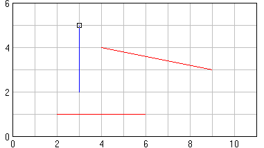

Исполнитель Чертежник и поле, на котором он работает, отображаются на экране следующим образом:

Здесь маленький квадрат изображает Чертежника, красным цветом изображены отрезки, которые надо нарисовать, а синим — уже нарисованные Чертежником отрезки. Когда перо Чертежника опущено, он изображается квадратом меньшего размера.
Команды исполнителя Чертежник
содержатся в модуле Drawman:
ToPoint(x,y)– перемещает перо Чертежника в точку(x,y);– перемещает перо Чертежника на вектор
OnVector(a,b)(a,b);– поднимает перо Чертежника;
PenUp– опускает перо Чертежника.
PenDown
Для вызова задания для исполнителя Чертежник используется следующий шаблон программы:
uses Drawman;
begin
Task('c1');
end.
В конце программы перо Чертежника должно быть поднято и находиться в начале координат.
Здесь Task ¦— процедура,
содержащаяся в модуле Drawman и вызывающая
задание с указанным именем.
Имеются следующие группы заданий для исполнителя Чертежник:
a– вводные задания;– цикл с параметром;
c– вложенные циклы;
cc– процедуры без параметров;
p– процедуры с параметрами.
pp
Для создания произвольного поля размера 20 x 30
используется процедура StandardField без параметров, а для создания
поля размера N x M — процедура Field(N,M).